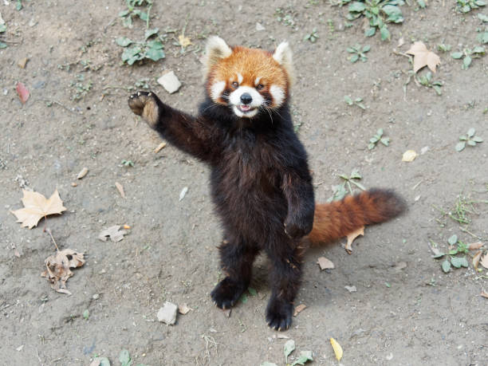
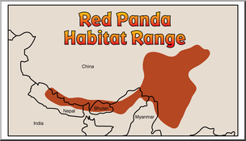

Panda's usally feed on bamboo
and leaves. They sometimes even
snack on different fruits,
insects, and small lizards.

1. Red pandas are the first known species of pandas
2. Red pandas are known as one of the worlds
cutest animals!
3. Red Panda's can stand up like a human!
4. Red Panda's are a lot like bears and cats
5. Red Panda's are not related to Giant Panda's
Red pandas live in the Eastern Himalayas in places like China, Nepal, and Bhutan.
